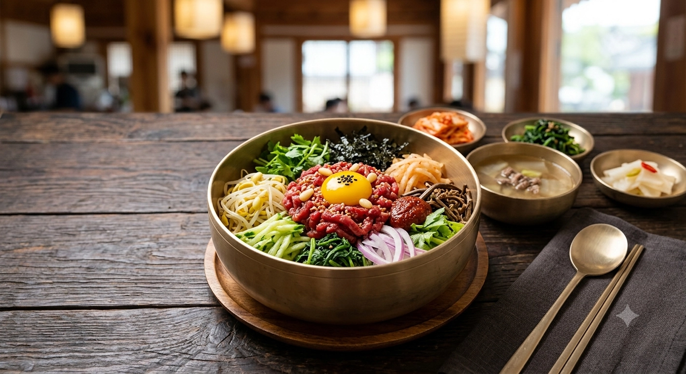

FOOD · TRAVEL GUIDE
Taste Korea
Korean food changes from neighborhood to neighborhood and city to city. A barbecue night in Seoul, a market morning in Busan, or a café day in Seongsu can lead to very different places—and sometimes a different place to stay.
Explore Korean food